электронный
ресурс по учебной дисциплине 1-58 01 01 - "ИНЖЕНЕРНО-ПСИХОЛОГИЧЕСКОЕ ОБЕСПЕЧЕНИЕ ИНФОРМАЦИОННЫХ ТЕХНОЛОГИЙ"
|
||
| Оглавление | Программа | Теория | Практика| Контроль знаний | Об авторах | ||
|
Содержание
ТЕМА 14 Технологии создания микроактюаторов § 14.1 Классификация микроактюаторов. § 14.2 Особенности создания микроактюаторов. § 14.3 Применение микроактюаторов. § 14.1 Классификация микроактюаторов. Стремление создать миниатюрные устройства на современном научно-техническом уровне, сочетающие электронику, оптику, акустику, механику в течение одного десятилетия воплотилось в рост объема производства от единичных образцов до массового выпуска промышленных приборов миллионными тиражами. Сфера применения таких устройств охватывает практически все стороны жизнедеятельности человечества: от пищевой промышленности и биомедицины до авиакосмических комплексов и атомной энергетики. Актюатор — исполнительное устройство или его активный элемент, преобразующий один из видов энергии (электрической, магнитной, тепловой, химической и др.) в другую (чаще всего — в механическую), что приводит к выполнению определенного действия, заданного управляющим сигналом. Микроактюатор – это микроскопическая следящая система, которая оперирует очень малым количеством энергии для работы одного механизма или системы. Ее особенности: высокая точность, быстрое переключение низкое энергопотребление, интегрируемость. Микроактюатор – это устройство, которое преобразует энергию в управляемое движение. Их размеры от нескольких квадратных микрометров до одного квадратного сантиметра. Диапазон применения таких устройств чрезвычайно широк и постоянно увеличивается. Активации (движение, деформация, приведение в действие) может быть достигнута следующими методами: электростатическим, магнитным, пьезоэлектрическим, гидравлическим и тепловым. При оценке того или иного метода иногда пользуются законами пропорционального уменьшения размеров. Перспективными методами считаются пьезоэлектрический и гидравлический, хотя и другие имеют важное значение. Так, электростатическая активация применяется примерно в одной трети актюатор, и вероятно, это наиболее общий и хорошо разработанный метод, хотя и у него сеть недостатки - это износ и слипание. Магнитные актюаторы обычно более энергоемки Различные виды микроактюаторов отличаются разными физическими принципами работы. Среди наиболее распространенных – электростатические, электромагнитные, пьезоэлектрические, жидкостные. В технике устройства такого типа включают: электрические двигатели, электрические, пневматические или гидравлические приводы, релейные устройства, электростатические двигатели. ЭМО-зеркала и электроактивные полимеры, хватающие механизмы роботов, приводы их движущихся частей, включая соленоидные приводы и приводы типа «звуковая катушка» и др. К простейшим типам электрических актюаторов относятся электростатические устройства на основе плоскопараллельных конденсаторов. Тепловые актюаторы обычно создают, используя эффекты теплового расширения или деформации контакта двух материалов (пары металл-диэлектрик) с разной величиной коэффициента линейного теплового расширения. Химическое управление актюаторами может осуществляться при помощи изменения состава окружающей среды, ее кислотности и других факторов, в частности, света. В качестве специфической разновидности химических наноактюаторов можно рассматривать так называемые биологические молекулярные моторы. § 14.2 Особенности создания микроактюаторов. Материалы МСТ. Основные материалы, применяемые для создания изделий МСТ: кремний; полимеры; керамика; металлы. В технологии МСТ выделяют две группы материалов – активные и конструкционные. Микросистемы представляют собой очень сложные конструкции; их создание требует сочетания разнообразных материалов. При создании сложных конструкций из различных материалов необходимо обязательно учитывать следующие их параметры и свойства: – кристаллическую совместимость; – термомеханическую совместимость; – тепловую сложность (допустимую тепловую нагрузку); – электрическую стойкость; – механическую стойкость; – механическую. Необходимо учитывать особенные условия функционирования МЭМС, а именно: – высокие температуры; – агрессивные среды; – радиация. Перспектива => базовая конструкция SiС/AlN.
Создание микроисполнительных устройств в составе МЭМ-систем. Пример =>разработан микродвигатель. Работа этого микропривода основана на электростатическом взаимодействии подвижных и неподвижных частей. Микропривод преобразует лестничное движение, создаваемое гребенчатой структурой, во вращательное движение выходного вала диаметром 50мкм.
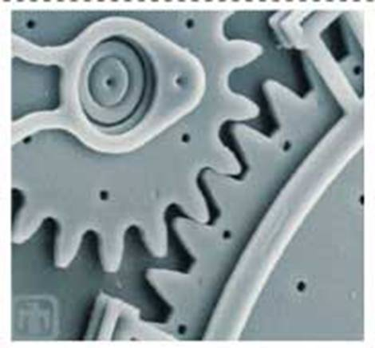
Рисунок 14.1 – Микропривод
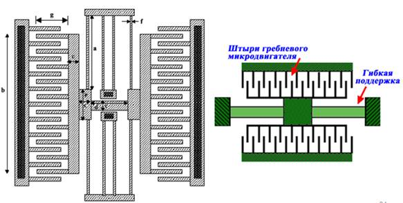 Рисунок 14.2 – Гребневые микродвигатели
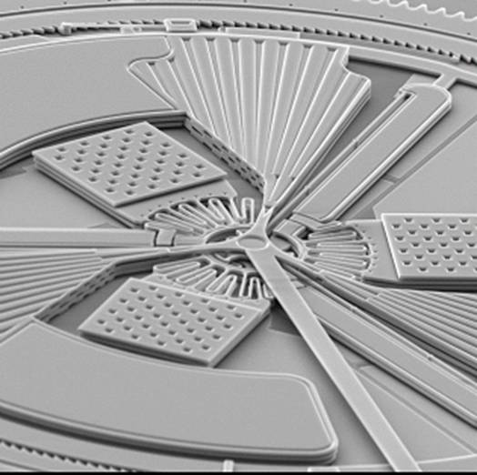 Рисунок 14.3 – Микрофотография термического актюатора Основное применение – источник микромеханического движения или усилия В различных микроисполнительных устройствах (МУ). Может использоваться в качестве привода: – микропозиционных устройств; – оптических микропереключателей; – электрических микропереключателей. Пример => микродвигатель(микропривод). Микродвигатель иcпользуется: – Для изготовления различных МИУ микророботов – Для систем автофокусировки микролинз – Для системы прецизионного микропозици-рования Микродвигатель работает от переменного тока 2В И 90 Кгц. Пример => МИУ. Служит для микро-прецизионного сканирования лазерным лучом. Лазерный источник изготовлен непосредственно на поверхности МИУ. Подвижная часть установлена на шарнирах. Перемещение подвижной части достигается за счет силы Лоренца, действующей на проводники с током, находящиеся в поле подвижного магнита. Чувствительность МИУ может быть изменена путем изменения жесткости стержня-пружины, который соединяет подвижную и неподвижную части МИУ.
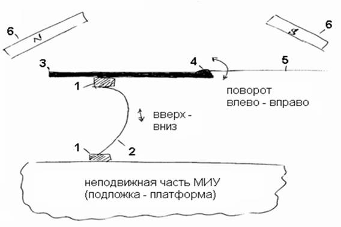
1 – шарниры; 2 – стержень-пружина; 3 – подвижная часть МИУ (проводник с током); 4 – полупроводниковый лазер; 5 – лазерный луч; 6 – постоянный магнит Рисунок 14.4 – МИУ Пример => МИУ, предназначенная для хирургической имплантации в среднее ухо человека в целях восстановления слуха у людей с повреждённым средним ухом. Подвижный элемент редкоземельный постоянный магнит размером ~0,5 мкм. Магнит подвешен на растяжках над отверстием в подложке. Вокруг магнита на поверхности подложки расположена обмотка возбуждения состоящая из 3-х витков. Диаметр обмотки 3мм. Устройство предназначено для устранения трудностей с передачей звука, наблюдаемых при применении обычных слуховых аппаратов.
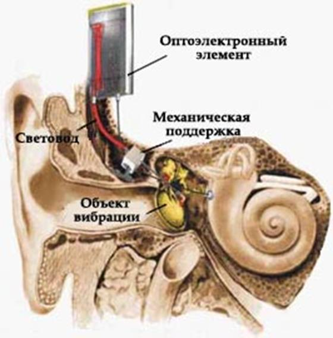 Рисунок 14.5 – МИУ, предназначенная для хирургической имплантации в среднее ухо человека Пример =>новый тип ЗУ от IBM. Носителями информации является полимерное покрытие, нанесённое на жесткий диск. запись информации производится специальным пирамидальным острием из Si3N4. Это острие прилеплено к концу гибкой консоли (работа гибкой консоли напоминает работу гибкого удилища). Гибкая консоль и острие имеет весьма малую массу (~0,3 Нг), Что ~ в 30 меньше массы ранее созданных консолей для серийных приборов. Принцип действия. Если между острием, прикрепленным к концу гибкой консоли, и подложкой диска для записи информации изменять разность потенциалов, то можно соответственно управлять расстоянием между концом острия и носителем записи(полимерным покрытием). 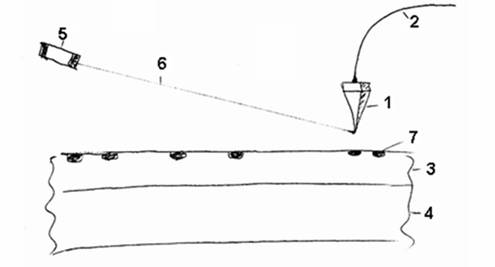 1 – пирамидальное острие из Si3N4; 2 – гибкая консоль; 3 – полимерное покрытие; 4 – жесткий диск; 5 – лазер для нагрева острия; 6 – лазерный луч; 7 – ямка в полимерном покрытии, образовавшаяся от нагретого Si3N4-острия Рисунок 14.6 – Схема ЗУ Запись информации производится острием, которое нагревается лазерным лучом. В носителе записи (в полимерном покрытии) остается ямка, глубина которой пропорциональна записываемому сигналу Считывание осуществляется путем изменения механического отклонения конца консоли при вращении диска и контакта острия с поверхностью диска ( ямка одной глубины + нет ямки + ямка другой глубины + ямка третьей глубины + ямка первой глубины и т.д.). Пример => планетарный микроредуктор изготовленный по МЭМС- технологии (рис.14.7). 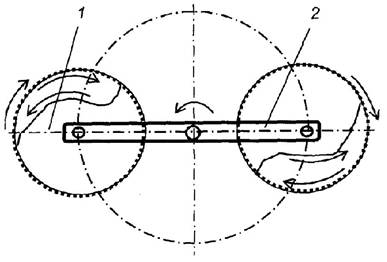 Рисунок 14.7 – Схема планетарного движения Использование МОЭМС в сенсорных системах. Создана МОЭМС – оптическая схема (ключ) на одном чипе размером 3x5мм (рис.14.8).
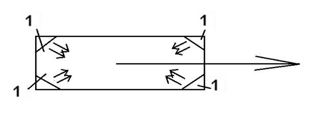 1 – оптические зеркала; → – световые потоки Рисунок 14.8 – Оптическая схема (ключ) МОЭМС содержит: 1) решающую составляющую – UMC 2) четыре подвижных электростати-чески управляемых зеркала. Размер зеркала 300x600 мкм. Назначение зеркал – из-менение направленности светового потока и направление его в свободное пространство по команде UMC – решающей составляющей 3) применили световоды для связи между зеркалами. МОЭМС имеет высокую надежность: после 40x106 циклов срабатывания отказав не было.
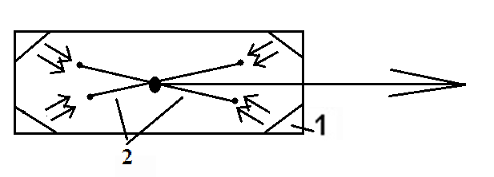 1 – управляемые зеркала; 2 – светодиоды Рисунок 14.9 – Функциональная схема МОЭМС Создана МОЭМС – микрооптическое кодирующее устройство. Содержит в интегральном исполнении: 1)UMC – решающую составляющую; 2) лазерный диод; 3) травленные зеркала; 4) полимидные контакты(светодиоды). Чип моэмс 0,75x0,8 мм, разрешение – 0,01 мкм Созданы отдельные микрокомпоненты: 1) управляемые зеркала 50x100 мм; 2) линзы франкеля; 3) матрицы линз франкеля; 4) оптические решётки; 5) система управления этими компонентами (тепловые методы управления). Из перечисленных микрокомпонентов методами микросборки были созданы на различных моэмс (4 и 5 примеры). Создана многофункциональная МОЭМС: 1) пространственный модулятор света; 2) для активной коррекции аберрации в оптических системах связи; 3) для оптической корреляции сигналов. Содержит 727 индивидуально управля-емых зеркал 5-й пример: Создана большая МОЭМС. Имеет три подвижные взаимо-перендикулярные стены – отражатели света. Предназначена МОЭМС для отражения света в том же направлении, откуда он поступил. Используется в дорожных отражателях. Может использоваться в интероферометрах. Исследования в Японии. Основные направления: 1) исследования микротрения (трение на микроуровне – это фундаментальная проблема в МЭМС); 2) исследования микроманипуляций (надо обеспечить высокую воспроизводимость работы микроманипуляторов); 3) исследования тонких пленок с уникальными свойствами. – тонкие пленки с памятью формы. При нагреве током они позволяют добиться больших и сложных перемещений, требуемых в катетерах, эндоскопах и др. устройствах; – пьезоэлектрические тонкие пленки; – магнитострикционные тонкие плёнки. Открыты и эффективно используются различные эффекты (и свойства) тонких магнитных пленок: 1) магнитострикционный эффект; 2) супергигантский магнитострикцион-ный эффект; 3) эффект Маттеуччи. и др. эффекты. 1-й пример: разработки не единичных МЭМС, а сразу целых матриц однотипных МЭМС. Совместное действие многих МИУ (микроис-полнительных устройств) в матричном МЭМС позволяющей создавать: 1) большее усилие; 2) большее перемещение. Свойства матричных МЭМС: 1) каждое МИУ в матричной МЭМС может снабдить его своим датчиком и контроллером. Это дает возможность получать сложные перемещения со многими степенями свободы. 2) они обладают повышенной надёж-ностью, т.к большая избыточность однотипных датчиков и МИУ в матрице МЭМС обеспечивает её работоспособность при отказе отдельных элементов. 2-й пример – технология “сложные подложки”: Поликремниевые пластинки микронных резисторов соединили с помощью гибких полимидных пленок. Получим микроробот (типа муравья). 3-й пример: разработана технология: • подъема единого элемента (единичного канатика) в вертикальное положение; • закрепления этого элемента в верти-кальном положении. Отдельные элементы созданы из ТППФ (тонкие пленки с памятью формы) При этом созданы: активный катетер диаметром 2,8 мм со многими степенями свободы путем закрепления на корпусе множества элементов – канатиков из ТППФ 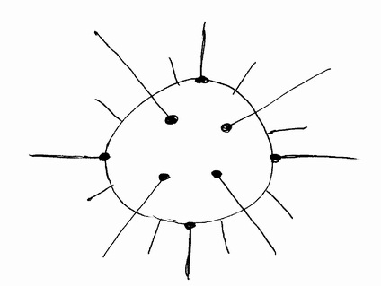 Рисунок 14.10– Активный эндоскоп 4-й пример: Создан МЭМС – емкостной датчик давления, сформированный методами поверх-ностной микрообработки. Воспринимающий элемент датчика, выполненный в виде круглой диафрагмы, скреплён с кремниевой подложкой не только по краям, как в обычных емкостных датчиках, но и в середине диафрагмы. 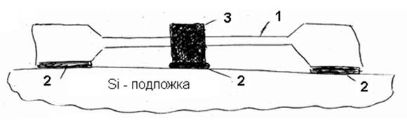 1 – крупная подвижная диафрагма (подвижная обкладка конденсатора); 2 – место крепления элементов с подложкой; 3 – цилиндрическая колонка Рисунок 14.11 – Емкостной датчик давления Вследствие центрального крепления, существенно изменяется характер зависимости емкости воспринимающего элемента от величины измеряемого давления. Датчик приобретает более лучшую и более линейную характеристику. Размер датчика (чипа) 3x3 мм при диаметре диафрагмы 1,5 мм, толщина диа-фрагмы 6 мкм. Диаметр колонны 300 мкм. 5-й пример: разрабатываются совершенно новые технологические приемы и операции создания 3D – структур: 1) Электроискровая механическая микрообработка; 2) УЗ – вся механическая микрообработка; 3) Самовыравнивающая сборка; 4) Методы деформации металлических микродеталей. § 14.3 Применение микроактюаторов. Микроактюаторы используются в робототехнике (рис. 14.12), в управляющих устройствах в космической области, в биомедицине, дозиметрии, в измерительных приборах, в индустрии развлечения, автомобилестроении и в домашнем хозяйстве. 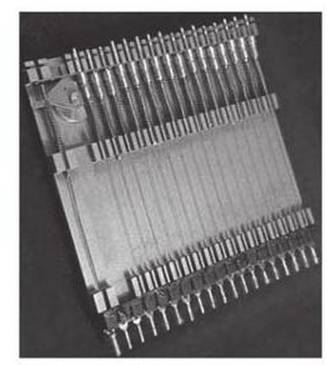 Рисунок 14.12 – Матрица из микроактюаторов для тактильного дисплея высокого разрешения Микроакпоаторы нужны для управления резонансными датчиками (генерируют и передают резонансную частоту); для управления режущими инструментами в микрохирургии (рис. 14.13), они также применяются как микродвигатели (рис. 14.14) для управления микрореле, микрозеркалами и микрозажимами; мпкроактюатором может быть даже мнкроэлектродное устройство для возбуждения тканей мускул в неврологических протезах. 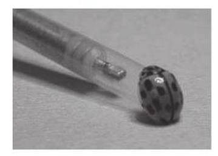 Рисунок 14.13 – Ультразвуковой катетер с микроактюатором внутри (для вращения ультразвукового преобразователя) 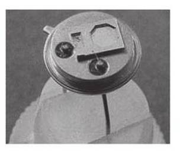 Рисунок 14.14 – Электростатический микроактюатор
| |
| (С) БГУИР |